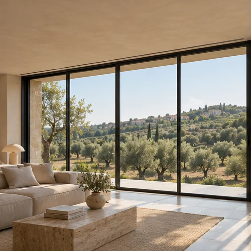
Finestres
Finestres i grans finestrals amb obertures adaptades a cada espai. T’ajudem a valorar l’aïllament, l’entrada de llum i el tipus de perfil.
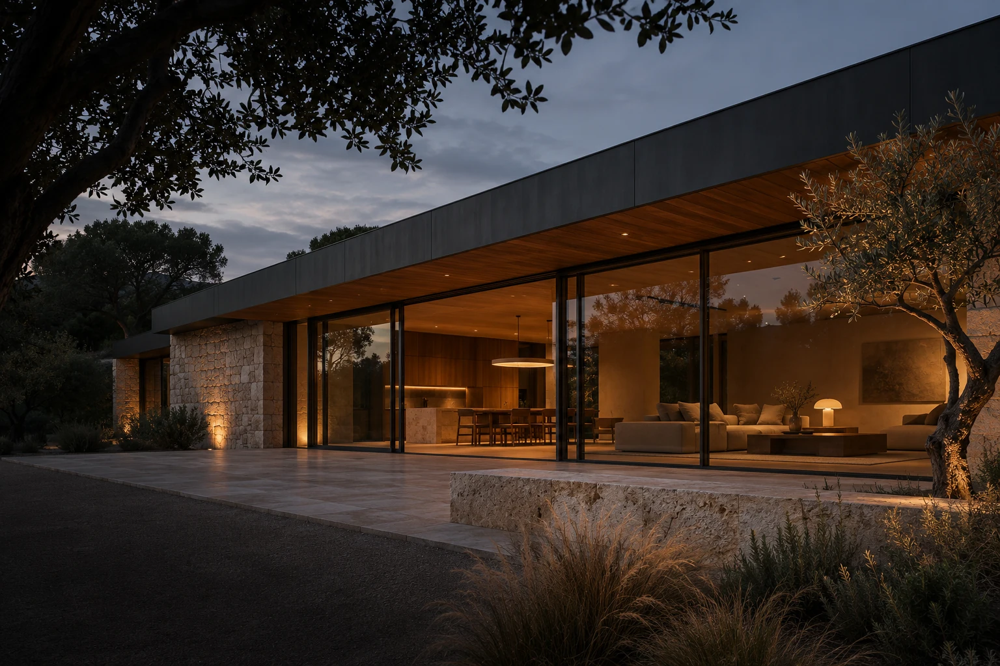
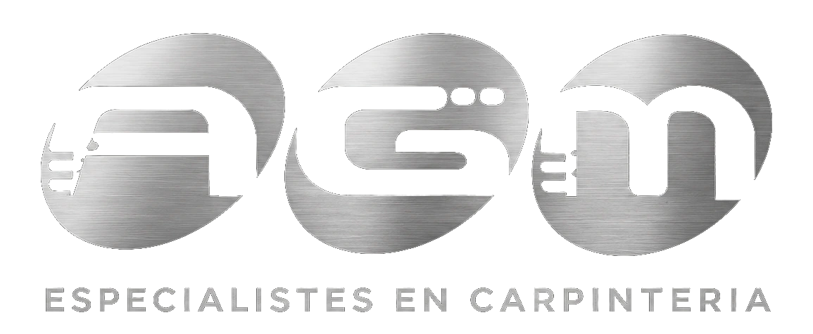
Fusteria exterior, tancaments de vidre i solucions per a l’arquitectura contemporània.
Descobreix els serveisInstal·lem finestres, portes i tancaments per a obra nova i reformes d’habitatges. T’acompanyem a l’hora de triar els materials, els acabats i el tipus d’obertura que encaixen amb el teu projecte.
Què instal·lem
Des de les finestres i els accessos fins a la façana i els espais exteriors.

Finestres i grans finestrals amb obertures adaptades a cada espai. T’ajudem a valorar l’aïllament, l’entrada de llum i el tipus de perfil.
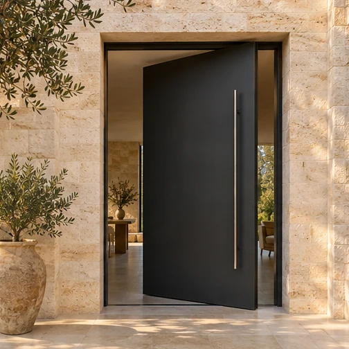
Portes d’entrada i d’exterior, amb perfils i acabats que s’integren en el disseny de la façana.
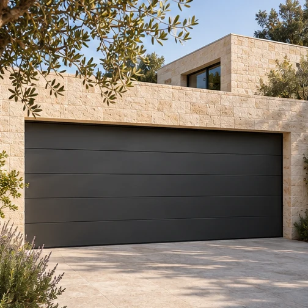
Portes de panells articulats que pugen i queden recollides sota el sostre, aprofitant l’espai davant del garatge.
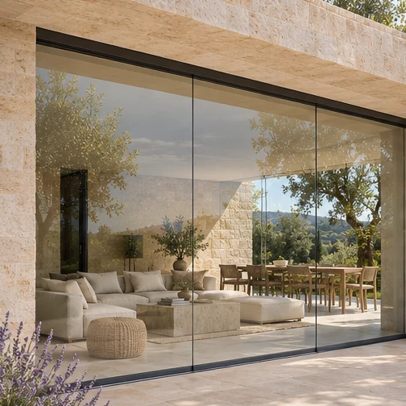
Tancaments de vidre per protegir la terrassa del vent i allargar-ne l’ús al llarg de l’any conservant la llum i les vistes.
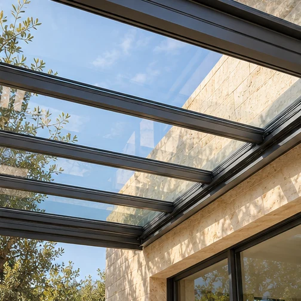
Cobertes amb trams practicables per obrir la terrassa al cel quan fa bon temps i tornar a cobrir-la quan convé.
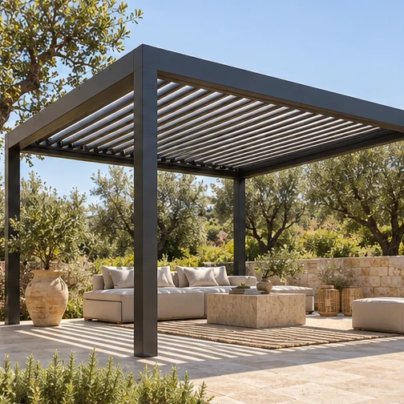
Pèrgoles amb lamel·les orientables que permeten regular l’ombra, l’entrada de llum i la ventilació.
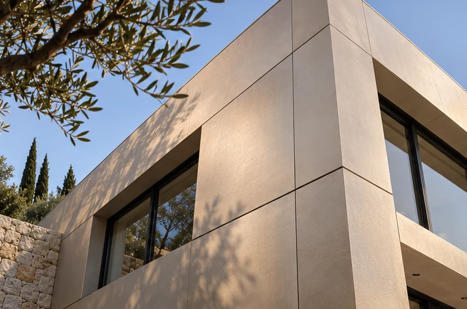
Revestiments de façana amb cambra d’aire ventilada i materials actuals per a obra nova i rehabilitació.
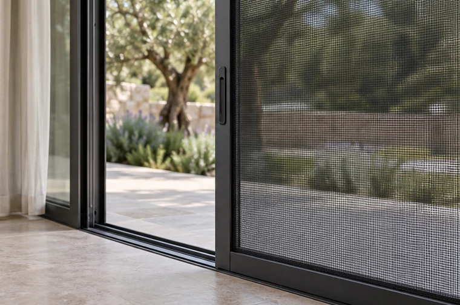
Mosquiteres adaptades a portes i finestres per ventilar l’habitatge i protegir-lo dels insectes.
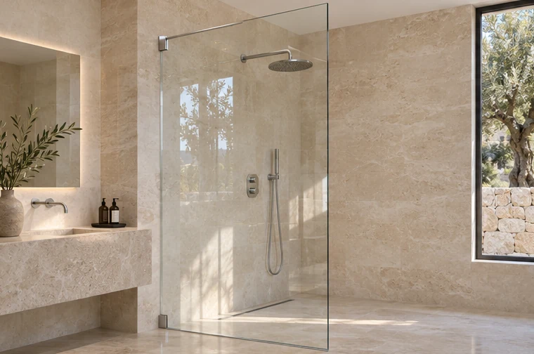
Mampares de vidre amb configuracions i acabats adaptats a l’espai i a l’accés de cada dutxa.
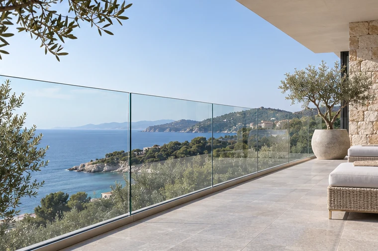
Baranes de vidre per a terrasses, balcons i escales, amb diferents sistemes de fixació segons les necessitats de l’espai.
Contacte
Explica’ns què vols instal·lar o reformar. Pots trucar-nos o escriure’ns per demanar un pressupost.
600 425 748 arnaugino@gmail.com